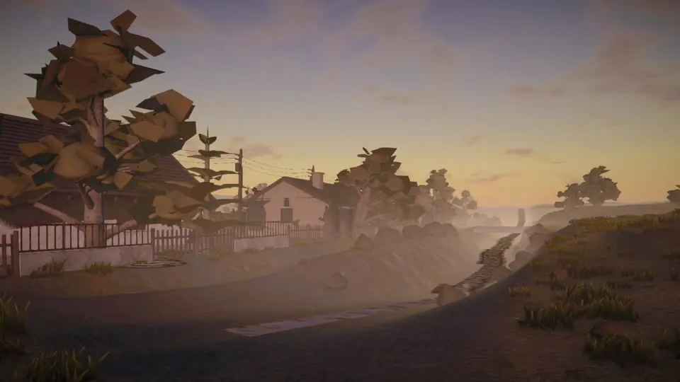
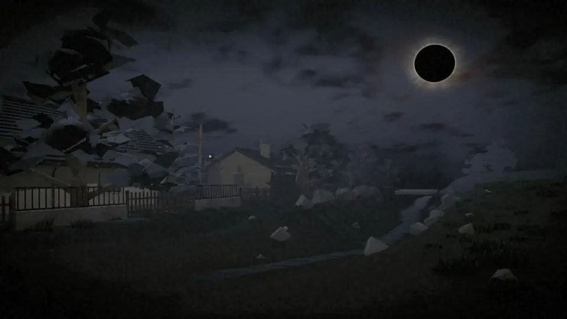
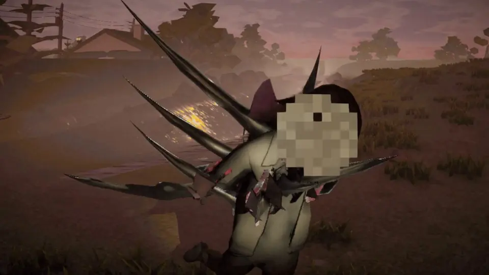
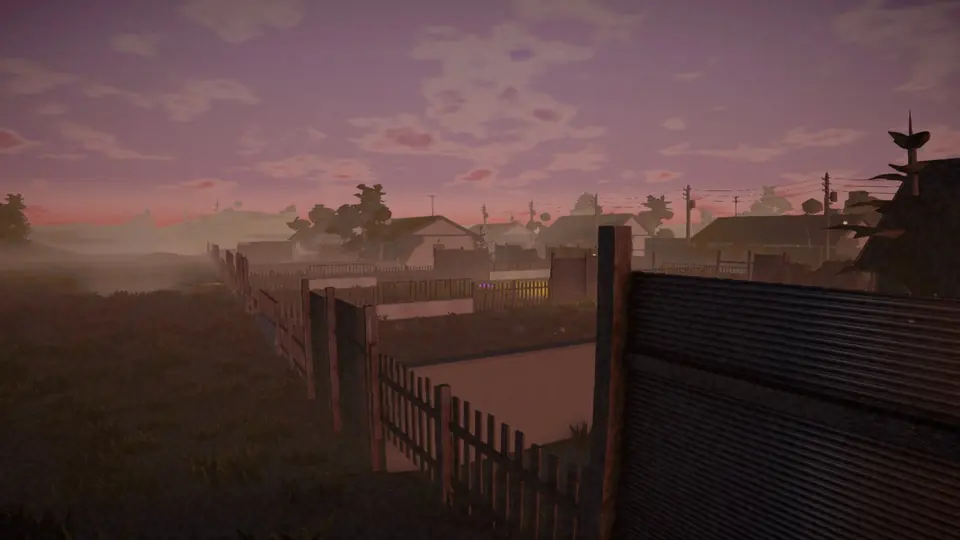

Currently building
Dusk Crew
Every light in the valley went out. You are the line crew sent back to turn them on. By day you build light. By night you walk out of it to bring people home. First-person co-op for one or two players.
Free demo · itch.io · Press page: screenshots, features, devlog
Build by day, survive by night
Fell trees, gather scrap, wire up lamp posts and a generator. After dark, what you built is the only safe ground.
The creature
It watches from above the street and takes people where your light does not reach. Nothing you carry can kill it.
The Returned
The people it takes come back wrong, with black blades tearing out of the body. Strong light melts the blades for two seconds. Hit it then.
Holo-print
Tools are printed from the wrist cuff: a grid, a wireframe drawn line by line, voxels, then wood and steel.
Kinetic Rig
In development. Tools float on a tether from the cuff. Send the axe off to work alone, then lift the logs home with the same beam.




Other work
-
RAVYN: ECHO
Roblox · Luau
Co-op dungeon game for one to four players. Lineages, skill fusion, and a "server admin" voice that talks you through every run.
-
RAVYN NEON
Desktop theme
One neon palette across Windows Terminal, Oh My Posh, cursors and Seelen UI. MIT licensed.
-
60 Seconds! Reatomized in Gulf Arabic
Localisation
Fan translation with full right-to-left support, about 3,800 strings. Finished, waiting on the developer's go-ahead.
-
RAVYN | ATM10 Hardcore
Community
Public Minecraft server: All the Mods 10 on NeoForge 1.21.1, hardcore rules. Join at
playravyn.com.
Contact
The fastest way to reach me is the RAVYN: Riftfall Discord. Press, playtesters and studios are all welcome.